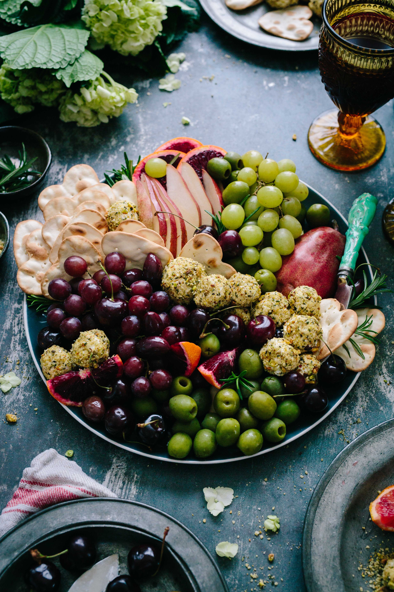

5 INEXPENSIVE HEALTH AND BEAUTY USES FOR COCONUT OIL
- Health & Wellness -

I’m obsessed with coconuts because they have SO MANY uses. Besides drinking coconut water (this pic is from a recent trip to Jamaica where coconuts are plentiful), I rely on coconuts because of their numerous health and cosmetic benefits. Keep reading for my top 5 non-cooking uses for coconut oil.